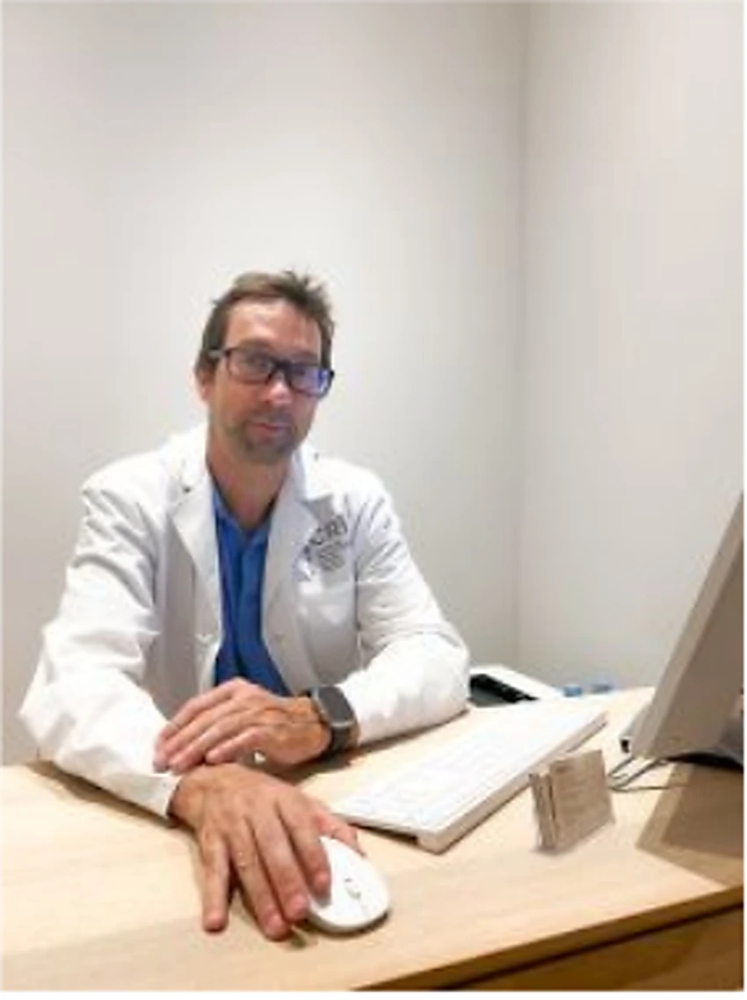
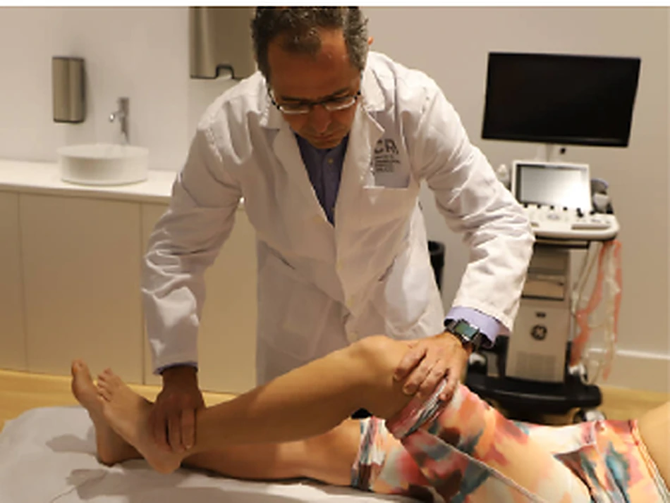
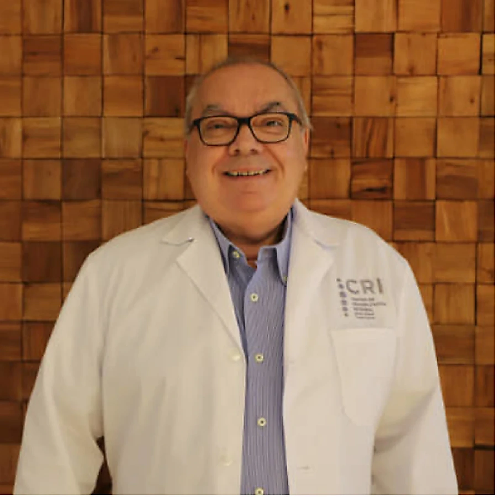
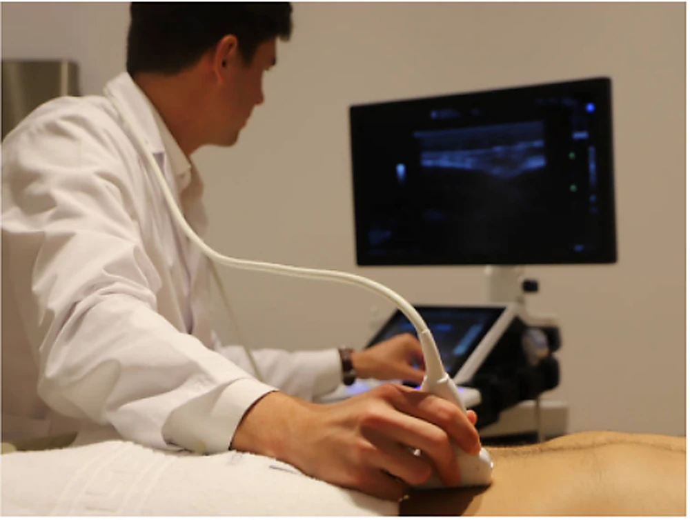

Medicina regenerativa
Valoración e intervenciones ecoguiadas en indicaciones seleccionadas del aparato locomotor.
Consultar disponibilidad →Cuando el caso lo requiere, conectamos la valoración médica con fisioterapia, pruebas funcionales y seguimiento para evitar recorridos fragmentados.
La disponibilidad de profesionales puede variar. Contacta con atención al paciente para confirmar agenda y servicio.
Valoración e intervenciones ecoguiadas en indicaciones seleccionadas del aparato locomotor.
Consultar disponibilidad →
Diagnóstico y seguimiento de patologías inflamatorias, degenerativas y autoinmunes.
Consultar disponibilidad →
Evaluación funcional y coordinación del plan de rehabilitación.
Consultar disponibilidad →
Valoración de lesiones, patologías articulares y opciones conservadoras o quirúrgicas.
Consultar disponibilidad →
Valoración especializada de patologías de columna y sistema nervioso.
Consultar disponibilidad →
Apoyo nutricional para salud, recuperación y composición corporal.
Consultar disponibilidad →La coordinación entre especialidades permite revisar el diagnóstico, ajustar el tratamiento y definir cuándo es necesario avanzar, mantener o cambiar el plan.
Te orientamos hacia la especialidad y el profesional más adecuados para tu caso.